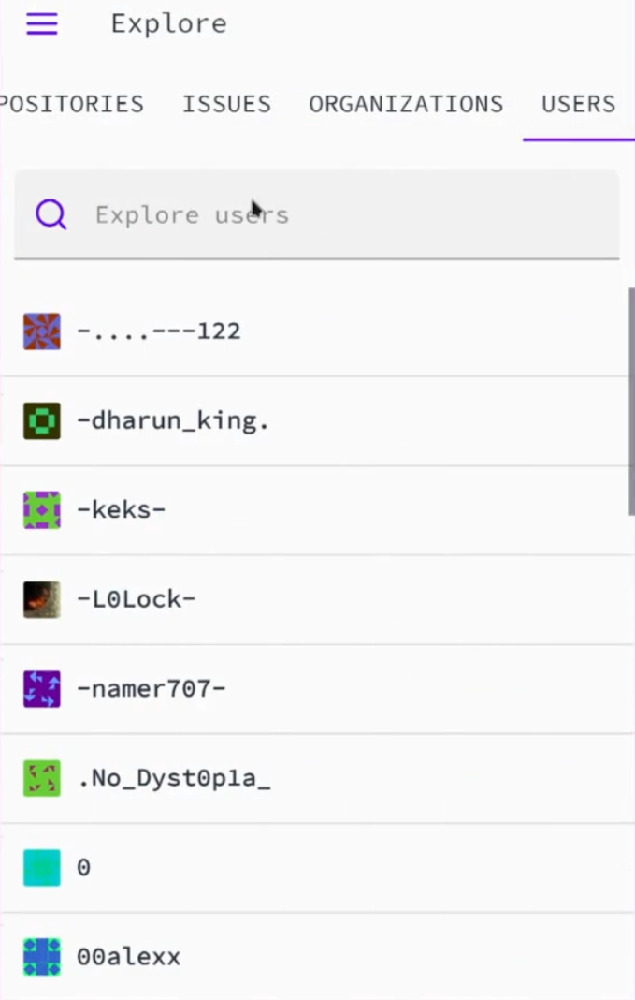
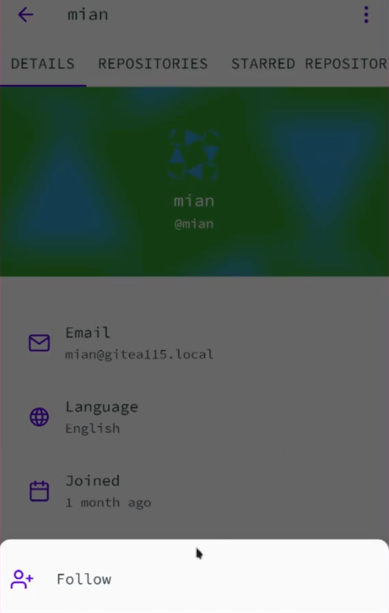
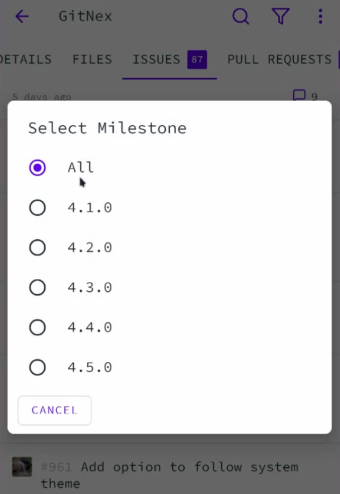
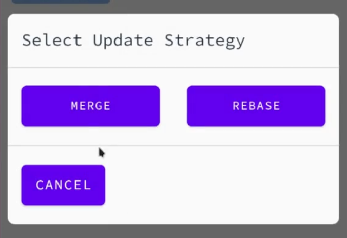

GitNex 4.1.0 is out with explore users, follow and unfollow user, filter issues by milestone and many other enhancements.

Explore users

Follow / unfollow user

Filter issues by milestone

Update pull request
- Scroll to release tag via link handler
- Search issue/pr by Id
- Hide profile picture when scrolling
- Render markdown in repository and organization descriptions
- Fix showing mark as read button for read notifications
You can watch the video above to see all the features and improvements added in this release.
Contribute Downloads